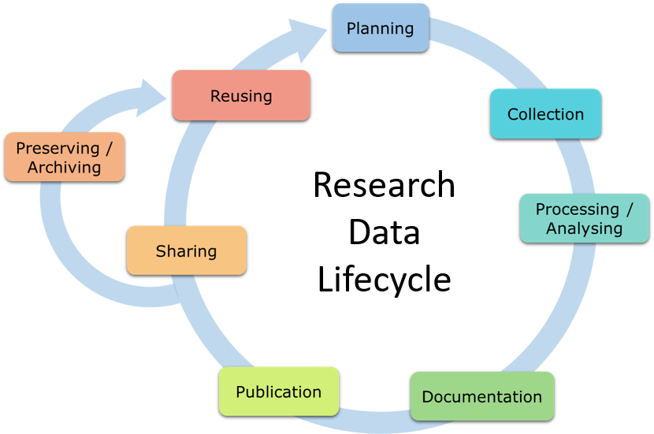
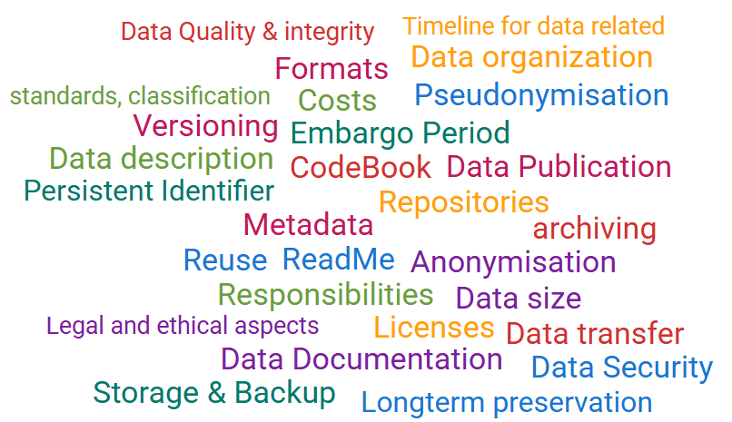
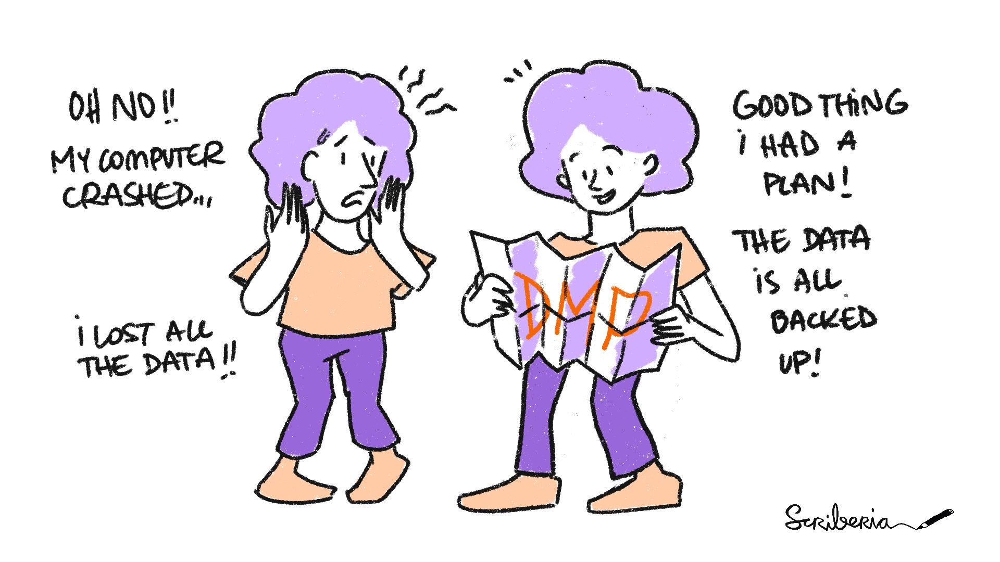
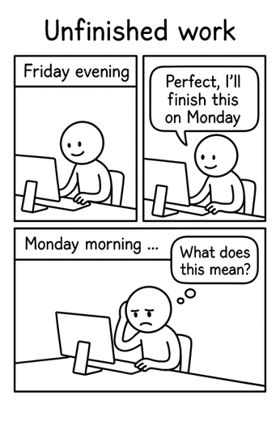

![]()
| Day | Date | Time | Title |
|---|---|---|---|
| 1 | 2026-05-07 | 09:00 - 09:30 | Welcome and Introduction to Research Data Management |
| 1 | 2026-05-07 | 09:30 - 10:30 | Project & Data Organization |
| 1 | 2026-05-07 | 10:30 - 11:30 | Data Management Plans (DMPs) |
| 1 | 2026-05-07 | 11:30 - 12:30 | Lunch Break |
| 1 | 2026-05-07 | 12:30 - 13:30 | Command Line |
| 1 | 2026-05-07 | 13:30 - 14:30 | Best practices for rectangular data |
| 1 | 2026-05-07 | 14:30 - 16:00 | Brain Imaging Data Structure (BIDS) |
Data Management Plans
Research Data Management for Psychology and Neuroscience
Course at Julius-Maximilians-Universität Würzburg, RTG 2660: Approach-Avoidance
Slides | Source

10:30
Schedule
This session: Data Management Plans
Acknowledgements
These slides are based on slides for the Research Data Management (RDM) plan session by Laura Meier (0000-0003-1368-2306), University Library of Ludwig-Maximilians-Universität, presented during the LMU Open Science Summer School 2025.
Source: https://github.com/laura-tte/OSS-25-DMPs/blob/main/README.md
Reused with modifications under a CC BY-SA 4.0 license.
1 How to plan data management?
What is a data management plan?
- A document that outlines how data will be handled during and after a research project
- Structures data management to make it easier to keep track of
Components of a DMP

What belongs in your DMP?
Exercise: Your DMP
Imagine you are about to start a new research project. You will create a Data Management Plan that covers all data-related aspects of your project. Brainstorm what should be included in this plan, taking into account the specifics of your research discipline.
DMP keywords

2 Why bother planning your data management?
Avoid worst-case scenarios

Why is a DMP helpful?
- Clarifies central aspects of RDM → provides structure for and optimization of data management
- Supports your own good scientific work → ensures that your data is complete, accurate, trustworthy, and FAIR
- Provides data guidelines for the entire course of the project → a “living document”

Funder requirements
| Funder | DMP demanded? | Submission on application? | Content | Updates? |
|---|---|---|---|---|
| European Commission, Horizon Europe | Yes | Comprehensive plan within the first 6 months of the project | Template | Yes, in case of changes and at the end of the project |
| German Research Foundation (DFG) | Information on the handling of research data | Yes | DFG Guidelines, DFG Checklist | No |
| German Federal Ministry of Education and Research (BMBF) | Depends on the program | If required, yes | Depending on the program; Educational research: Checklist | Depends on the program |
| Volkswagen Foundation (VW Foundation) | Yes | Yes | Template for a Base-DMP | No |
Biernacka, K., et al. (2023). Train-the-Trainer-Konzept zum Thema Forschungsdatenmanagement (Version 5). Zenodo. https://doi.org/10.5281/zenodo.10122153
Room for improvement?
Exercise: Room for improvement?
Source: DFG Checklist, section 1: Data description
Questions: How does your project generate new data? Is existing data reused? Which data types (in terms of data formats like image data, text data, or measurement data) arise in your project and in what way are they further processed? To what extent do these arise, or what is the anticipated data volume?
Given answer in a DMP:
“The sample data is recorded and organized using specific software. One to three GB of data will be generated.”
Your task: Is there anything to improve? Is there anything missing in this answer?
3 Tools that support you in planning
Data management plan tools
- Software for creating data management plans
- Simplified workflow that allows collaborative work
- Project management tool for handling research data
- Not a repository or storage solution: You cannot upload and store your data in a DMP tool
Example: RDMO Demo or RDMO at UHH
Research Data Management Organiser (RDMO)
- Online tool for creating DMPs (Open Source)
- DMPs are stored on local servers
Features:
- Use existing DMP templates (called questionnaires)
- Collaborative work: Rights and role management
- Import and export DMPs → polished, funder-ready DMP
- Snapshots: Capture different versions of your DMP
4 Let’s explore RDMO together
Now, it’s your turn…
Exercise: RDMO
Use RDMO to start creating a Data Management Plan — either for your own research project or for a fictional project.
- Log in to RDMO: RDMO Demo or RDMO at UHH
- Create a new project.
- Work through the questions, thinking carefully about:
- What types of data will you collect or generate?
- Which file formats will you use?
- How will you organize and name files?
- What metadata and identifiers will you use?
- Where will you publish your data and under what conditions?
Wrap-up: Planning is everything
… is it?
- Try not to get lost in the details
- Use the DMP as a management tool to keep an overview of your tasks
- Update your DMP as you go - it’s an evolving process and doesn’t need to include all details from the start
- Take advantage of RDM support services
Resources
- MPDL FAIR Research Data Management Tutorial
- Research Data Management (RDM) plan session by Laura Meier
- Your institutional RDM services!
References
RDM Course